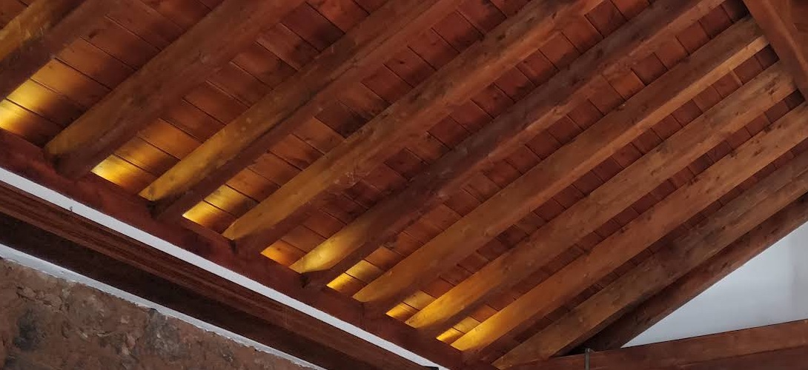
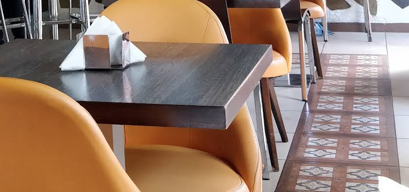
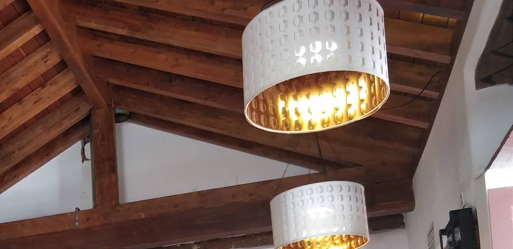
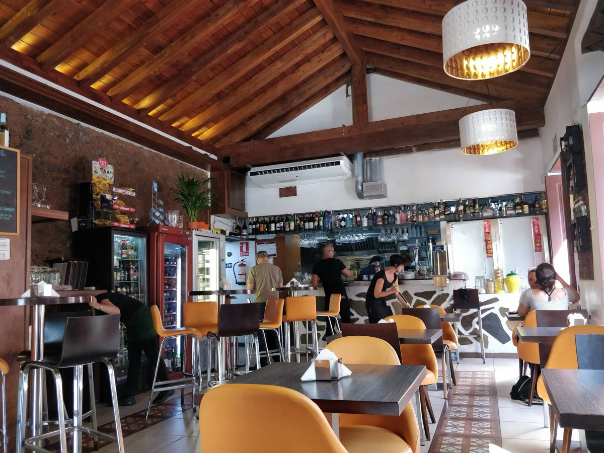

Tapas bar · Historic centre of La Laguna
Rincón
Lagunero
4.3
Ropa vieja, croquettes and octopus under a timber ceiling, right on Calle Herradores. With a terrace and the kitchen open all day.

- Terrace
- Kitchen open all day
- Vegetarian options
01 — What people say
More than three thousand eight hundred reviews. This is what keeps coming up.
average on Google
3,800+ reviews
-
01
«Excellent tapas, especially the ropa vieja.» (translated)
Fernando R.Google, via Gastroranking · Apr 2026
-
02
«Very tasty traditional food, with excellent service and atmosphere.» (translated)
Maru G.Google, via Gastroranking · Apr 2026
-
03
«Excellent service. Superb tapas: the mushrooms stuffed with almogrote, the pork leg, the octopus…» (translated)
Esther L.Google, via Gastroranking · Apr 2026
-
04
«Good quality and price, quick service, friendly staff.» (translated)
Toni P.Google, via Gastroranking · Apr 2026
-
05
«A good tasca with different dishes, very friendly staff, good prices.» (translated)
Dóra T.Google, via Gastroranking · Mar 2026
-
06
«A rainy afternoon in La Laguna, some good tapas and a few glasses of wine, with good service…» (translated)
Corine D.Google, via Gastroranking · Mar 2026
-
07
«Good food, low prices and impeccable service!» (translated)
Kishor M.Google, via Gastroranking · Mar 2026
-
08
«We need more people like Hugo, never let him go. Kind and resourceful.» (translated)
Javier C.Google, via Gastroranking · Mar 2026
02 — To share
The classic menu, served in plates for the middle of the table.
- 01
Ropa vieja
The dish reviewers mention most. Canarian shredded beef and chickpea stew.
- 02
Homemade croquettes
Freshly made.
- 03
Octopus
An island classic.
- 04
Tortilla
Spanish omelette, to share on the terrace.
- 05
Cheeses
To go with a glass of wine.
- 06
Mushrooms with almogrote
Stuffed with the island's cheese spread, and mentioned by guests.

Breakfast and coffee in the morning · vegetarian options. Daily menu and prices: ask at the bar or give us a call.
03 — The house
An old-town house, with the timber on show.
Rincón Lagunero sits on Calle Herradores, in the historic centre of San Cristóbal de La Laguna, a UNESCO World Heritage Site. Inside: a pitched wooden ceiling, a stone wall, hydraulic tiles underfoot and lamps that wash the room in gold.
Outside, the terrace. And a kitchen that doesn't close between services: come by mid-afternoon and order tapas as if it were lunchtime.


04 — Visit
Herradores, 110.
- Address
- Calle Herradores 110
38201 San Cristóbal de La Laguna
Tenerife, Spain
Open in Google Maps ↗ - Hours
- Kitchen open all day.
To check opening hours or book a table, call us. - Phone
- 922 15 40 27